F.D. MÖRKHOLMSKOJAN
Norr om Stenstamon och väster om Risö trusk ligger en myrholme som heter Mörkholmen. I dess norra kant nära myrkanten hittade jag för ett antal år sedan lämningarna av en gammal skogskoja. Resterna av en stålsäng, kaffekoppar och annat porslin. En gammal spade fann där etc.
Är det någon som läser detta som vet något ytterligare om denna koja ? Hör av Er!
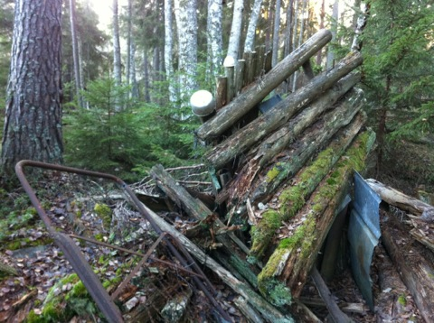
Resterna av kojan på Mörkholmen den 26 november 2011. Foto: Ronny Fredriksson
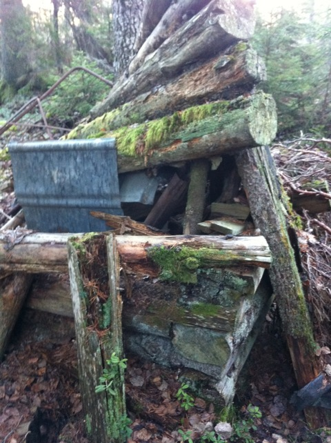
Fotograferat ur lite annan vinkel. Kojan på Mörkholmen. Foto: Ronny Fredriksson
MÖRKRET
Genom Nils Hjort fick jag för ett antal år sedan vetskap om att i den djupaste skogen på Norrberget funnits ett avsides beläget torp kallat Mörkret. Man kan fundera över varför man döper ett boställe till Mörkret ? Mörkret var ett gammal torp som låg ungefär på mitten av Norrberget. Idag kan man enbart skönja resterna av några små åkrar där det idag växer mycket gammal granskog. Husgrunderna går att se samt resterna av något som sannolikt varit en jordkällare. I skogen ligger också gamla stengärdsgårdar som kanske omslöt torpets betesmark.
Mörkret var mest isolerat sommartid då enbart den dåliga vägen/stigen ner mot byn Andersbo fanns att tillgå. Vintertid var kommunikationerna bättre sägs det. Anledningen till detta var att vintervägen mellan Dannemora gruvor och Lövstabruk passerad över Norrberget där torpet Mörkret låg. Det sägs att det bedrevs lite av ”lönnkrog”av gubben Norrström i Mörkret för forkarlarna som gärna stannade till.
Mörkret är en plats med en viss stämning. Jag brukar ge mig dit på våren när blåsipporna blommar och sätta mig en stund och filosofera.
Besök gärna mörkret…..insup atmosfären och låt platsen tala till dig.
Apropå tala och lyssna. På en höjd efter stigen mellan Andersbo och Mörkret finns en sten som kallas ”Lyssnarstenen”. I gamla tider när korna gick på skogen lyssnade man efter deras skällor från denna plats.
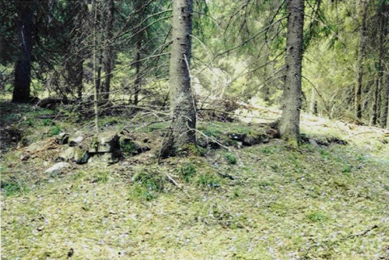
Husgrund vid Mörkret. Foto: Ronny Fredriksson
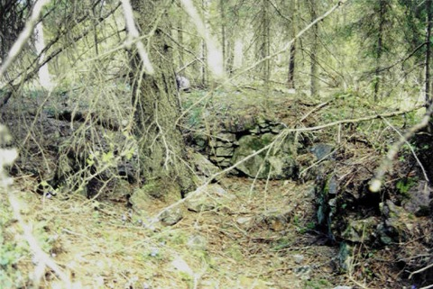
Rester av källaren vid Mörkret. Foto: Ronny Fredriksson
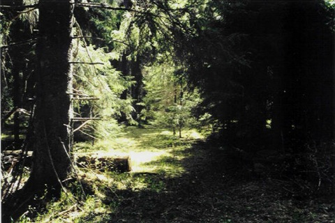
Den gamla stigen till Mörkret. Foto: Ronny Fredriksson
OLVBO
I sydöstra delen av Florarna har det funnits en gård som hette Olvbo. Det är idag inte så mycket som syns. Men det är lätt att ta sig dit på skogsvägen som går ut på Långal, halvvägs mellan Randersbo och Långal så ligger fd gården/torpet Olvbo. Det syns att det är gamla med gran igenplanterade åkrar.
Strax väster om Olvbo ligger den sk Olvbo kullen. Ett litet berg där man kan stöta på järpe och tjäder emellanåt.
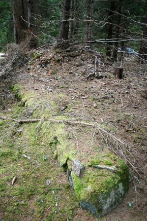
Grunden av boningshuset vid Olvbo. Foto: Ronny Fredriksson
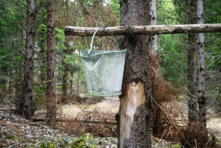
En gammal spann vid Olvbo. Foto: Ronny Fredriksson

Grunden av ladugården. Foto: Ronny Fredriksson
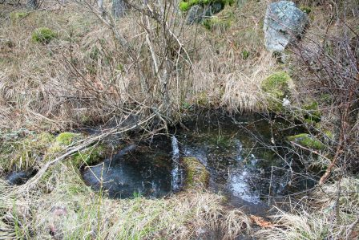
Källa/brunn vid Olvbo. Foto: Ronny Fredriksson
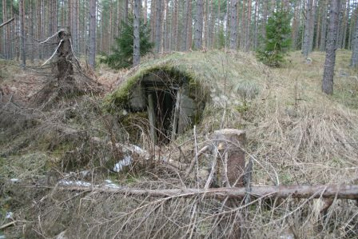
Jordkällaren. Foto: Ronny Fredriksson
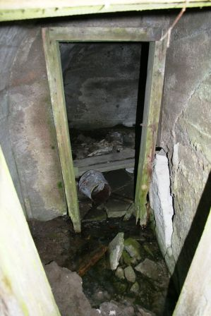
Interiör jordkällaren. Foto: Ronny Fredriksson
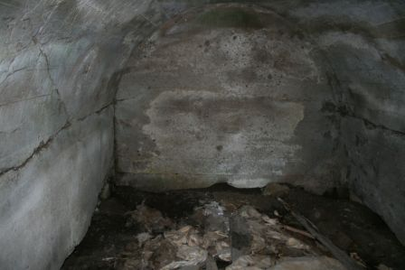
Inne i jordkällaren. Foto: Ronny Fredriksson
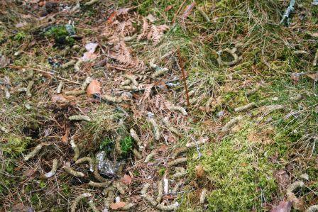
Tjäderspillning på Olvbo kullen. Foto: Ronny Fredriksson

Olvbo kullen. Foto: Ronny Fredriksson

Branten vid Olvbo kullen. Foto: Ronny Fredriksson
Vika
Vika gård befinner sig i naturreservatets yttre zon, dvs marken är privat. Men öster om gårdens byggnader finns en parkering för vidare vandring in i reservatet.
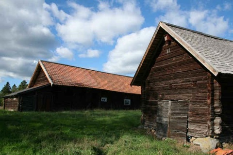
Dessa gamla hus, bla ett gammal gethus, härstammar från 1700-talet. Foto: Ronny Fredriksson

Samma hus som ovan ur annan vinkel (vid parkeringen Vika). Foto: Ronny Fredriksson
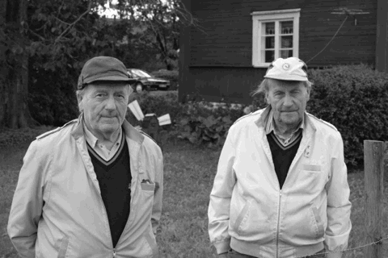
Tore och Ove i Vika. Foto: Ronny Fredriksson
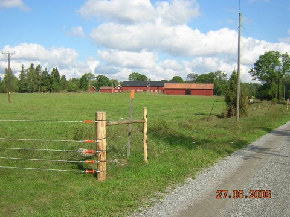
Vika gård från söder. Foto: Ronny Fredriksson
Långmyrens fäbod
Den gamla fäboden vid Långmyren låg sydost om Vika och nordost om fd bostället Olvbo. Väster om Långmyren och öster om Upplandsleden.
Hittar ni dit nu?
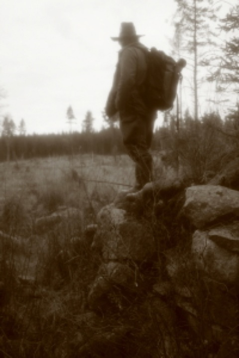
En man står och betraktar platsen där fäboden låg. Foto: Ronny Fredriksson
Koordinaterna om du har en gammal eller ny gps är x 6685095 y 1615364.
Resterna av fäboden låg för enbart några år sedan i en trolsk grov gammal granskog….ursprungligen låg fäboden mer öppet. För några år sedan kalhöggs hela området inklusive marken där fäboden leget. Ingen hänsyn togs till detta av skogsbruket. När hygget var nytt kunde man se att skogsmaskinerna kört rakt över de gamla grundstenarna av fäboden. Detta trots att Riksantikvarieämbetet klassat fäboden som kulturminne med beteckningen Film 313:1.
Enligt uppgift skall det finnas fem stycken husgrunder på den gamla fäboden. Måste medge att jag inte lyckats se fler än två. Men ett tränat öga kanske ser fler? Det finns dock rester av en gammal jordkällare som är ganska välbevarade.
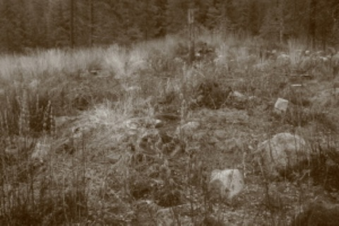
Resterna av en gammal husgrund. Foto: Ronny Fredriksson
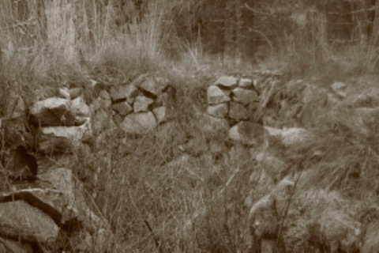
Den fd jordkällaren vid fäboden. Foto: Ronny Fredriksson
Vid fäboden finns trots skogsbrukets framfart den gamla stensatta källan välbevarad med klart vatten.
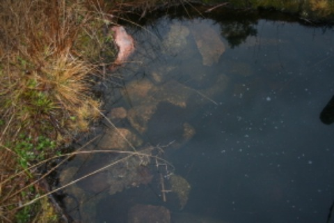
Den stensatta källan med klart vatten. Foto: Ronny Fredriksson
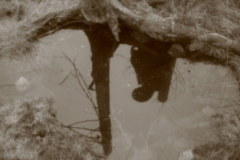
Källan. Foto: Ronny Fredriksson